1. About Document Conversion Service
The Document Conversion Service provides a REST API to convert binary data from one format to another. For example, a JPEG image could be converted to a PDF file. Another use case is text extraction from different document types. The actual content conversion is not implemented by the Conversion Service. The service offers an interface for plugins that perform the actual conversion.
2. Configuration
There might exist several plugins that may fulfill a given request, so you can configure which plugin to use for a given request. By default, the service just selects the first available plugin that claims to support the requested source and target mimetypes.
In order to configure this, specify a list of use cases in your application.yaml in the key
rendering (for render plugins) or in the key extraction (for fulltext plugins).
2.1. Use cases for render plugins
Each use case consists of
-
sourceType-
a regular expression matching the mimetype to be converted
-
-
sourceClassifier-
an optional string to further qualify the type of source data supported by the plugin
-
-
targetType-
a regular expression matching the mimetype to be converted to
-
-
plugin-
the name of the plugin to use (by default the fully qualified class name, but can be specified by each plugin)
-
The optional sourceClassifier can be used to limit the type of input data supported by the plugin. For example, a
plugin might support application/xml data but only when the XML file is using a specific doc-type. The plugin-package
must contain a classification plugin that is able to classify input data accordingly.
For a given request the service will search the list in the given order and use the first plugin whose configured sourceType and targetType match the requests.
rendering:
useCases:
- sourceType: application/pdf
targetType: image/jpeg
plugin: my-pdf-to-image-plugin
- sourceType: .*
targetType: .*
plugin: my-fallback-pluginThe configuration above will instruct the service to use the plugin with the name my-pdf-to-image-plugin for requests
to render PDFs to JPG or JPEG files. In any other case it uses the plugin my-fallback-plugin. Note that if
my-fallback-plugin would be listed before the other one every request would be handled by my-fallback-plugin.
2.2. Use cases for extraction plugins
Each use case consists of
-
sourceType-
a regular expression matching the mimetype to be converted
-
-
plugin-
the name of the plugin to use (by default the fully qualified class name, but can be specified by each plugin)
-
For a given request the service will search the list in the given order and use the first plugin whose configured sourceType matches the requests.
extraction:
useCases:
- sourceType: application/pdf
plugin: de.eitco.commons.conversion.plugins.oss.TikaFulltextOcrExtractionPluginThe configuration above will instruct the service to use the plugin with the name my-extraction-plugin for requests
to extract text from pdf files.
2.3. General configuration settings
2.3.1. Limiting the size of uploaded data
To limit the size of the uploaded data to be rendered, the following configuration properties can be used:
server:
undertow:
max-http-post-size: 30MB
spring:
servlet:
multipart:
max-file-size: 30MB
max-request-size: 30MB3. Plugins Overview
The service provides two plugin interfaces: RenderPlugin and FulltextPlugin. A RenderPlugin converts from one
document type to another. It defines a list of supported source mimetypes and a list of supported target mimetypes.
A FulltextPlugin can extract text from a document. It defines a list of supported source mimetypes. The target mimetype
is always text/plain.
3.1. Open source plugins
The document-conversion-plugins-oss library provides several
plugins based on open source libraries. To use the plugins, the jar file of the library must be added to the classpath
of the service. The plugins will be registered automatically.
A ZIP containing the library and additional dependencies can be downloaded from nexus using the following maven coordinates:
<dependency>
<groupId>de.eitco.commons</groupId>
<artifactId>document-conversion-plugins-oss</artifactId>
<type>zip</type>
<classifier>zip</classifier>
<version>12.0.1-SNAPSHOT</version>
</dependency>Unresolved directive in plugins/open-source.adoc - include::../../../../../plugins/oss/target/generated-sources/main/adoc/plugins.adoc[]
| The OpenHtmlRenderPlugin has a problem with xml-structures who doesn’t close the tags. This will give you an exception. |
3.1.1. Fulltext plugins
The following fulltext extraction plugins exist:
-
de.eitco.commons.conversion.plugins.oss.TikaFulltextExtractionPlugin-
extracts text from pdf, doc(x), xls(x), epub, html, msg, odp, ods, odt, pptx, rtf and xml files using open source java solutions (namely apache tika)
-
-
de.eitco.commons.conversion.plugins.oss.TikaFulltextOcrExtractionPlugin-
extracts text with ocr from pdf, doc(x), xls(x), epub, html, msg, odp, ods, odt, pptx, rtf and xml files using open source java solutions (namely apache tika and tesseract for ocr)
-
Enable tesseract ocr:
If you want to use the TikaFulltextOcrExtractionPlugin to extract text from images, you need to install tesseract.
In the following steps the installation will be explained.
-
Download and install tesseract from this page https://github.com/tesseract-ocr/tessdoc/blob/main/Downloads.md.
-
For Ubuntu for example: sudo apt install tesseract-ocr
-
-
Add tesseract to the path enviroment variables. For example in Windows you must add the following lines in the path:
-
{path to tesseract}\Tesseract-OCR
-
{path to tesseract}\Tesseract-OCR\tessdata
-
-
Add new language packages to tesseract tessdata directory. Download the packages from the following site https://ocrmypdf.readthedocs.io/en/latest/languages.html
-
The default language is english (tesseract shortname = eng)
-
If you add a new language you must add they also in the yaml
-
Also you can change the dpi for tessearct image extraction
-
extraction:
tikaOcrLanguage: "eng+deu"
tikaOcrDpi: 3003.1.2. Levigo Jadice plugins
The document-conversion-plugins-jadice library was discontinued.
=== Microsoft Graph plugins
The document-conversion-plugins-msgraph library provides several
plugins based on Microsoft graph libraries. To use the plugins, the jar file of the library must be added to the classpath
of the service. The plugins will be registered automatically.
| If you want to use this plugin you need a Microsoft 365 account which can use sharepoint and azure. |
A ZIP containing the library and additional dependencies can be downloaded from nexus using the following maven coordinates:
<dependency>
<groupId>de.eitco.commons</groupId>
<artifactId>document-conversion-plugins-ms-graph</artifactId>
<type>zip</type>
<classifier>zip</classifier>
<version>12.0.1-SNAPSHOT</version>
</dependency>Unresolved directive in plugins/microsoft-graph.adoc - include::../../../../../plugins/ms-graph/target/generated-sources/main/adoc/plugins.adoc[]
3.1.3. Setup microsoft graph render plugins
If you want to use the graph render plugins you will need a technical user and a sharepoint drive. A technical user in azure is named "app registration". In the following we will explain how to get an azure app registration and the sharepoint drive id.
App Registration
Login into https://portal.azure.com/. And search for the App Registration now you will see the following windows and you can create a new app registration:
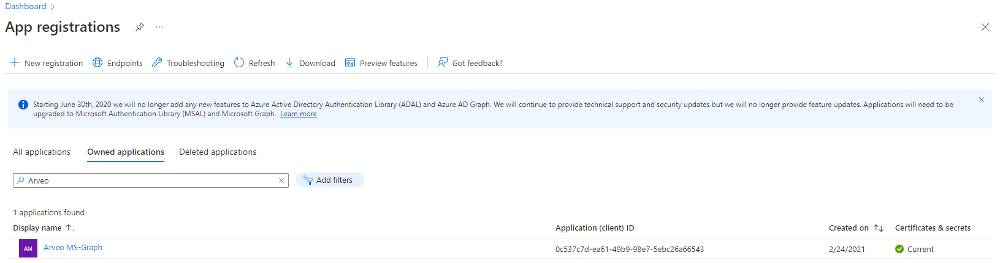
If you go into your new app registration you will find in the overview the client-id and the tenant-id.
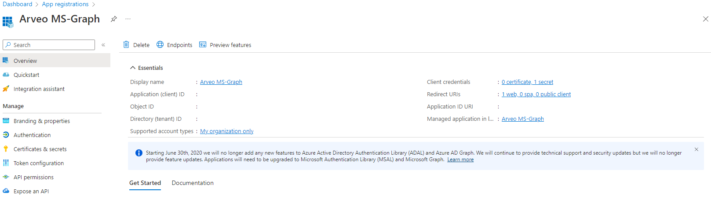
Now you can go to the api-authorization. The minimum you will need for the microsoft graph render plugin is the authorization named "Files.ReadWrite.All".
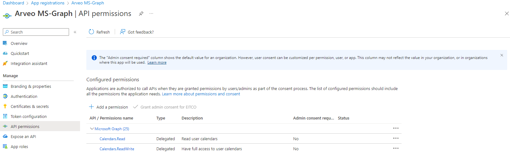
Now you can also set the authentication security for the app-registration. You can allow the app-registration to work in every tenant in azure or only in the tenant of yourself.
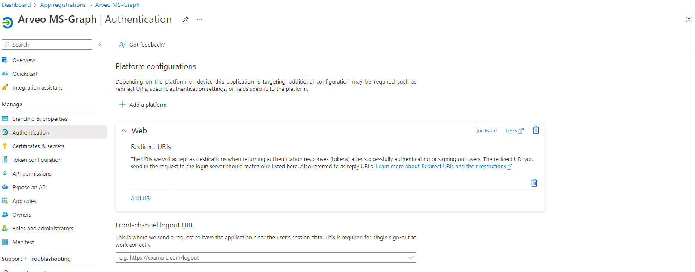
The last we will need is a secret this can generate in the following window.
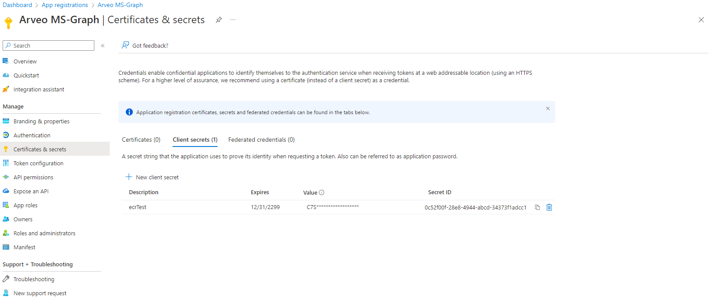
SharePoint
At first you need to create a sharepoint site and a drive. If you have create this you will need the SharePoint drive id. In the following we will explain how to get the drive id.
First you will need a SharePoint Teamwebsite. After you create the website, you can create a new document library [Optional].
A helper for the following request is the following Graph Explorer.
If you use this tool you musst be login with a user and you will set the permissions in "Modify permissions".
Get sharepoint site id
GET https://graph.microsoft.com/v1.0/sites/root:/sites/{site_url_name}
Example https://graph.microsoft.com/v1.0/sites/root:/sites/xxxxxxx
Response:
{
"@odata.context": "https://graph.microsoft.com/v1.0/$metadata#sites/$entity",
"id": "xxxxxxxx.sharepoint.com,0bbbfad6-xxxx-xxxx-xxxx-xxxxxxxxxxxx,3c5f2d82-xxxx-xxxx-xxxx-xxxxxxxxxxxx",
"name": "xxxxxxxx",
"displayName": "arveo"
}Get sharepoint drive id
GET https://graph.microsoft.com/v1.0/sites/{site_id}/drives
Example https://graph.microsoft.com/v1.0/sites/xxxxxxxx.sharepoint.com,0bbbfad6-xxxx-xxxx-xxxx-xxxxxxxxxxxx,3c5f2d82-xxxx-xxxx-xxxx-xxxxxxxxxxxx/drives
Response:
{
"@odata.context": "https://graph.microsoft.com/v1.0/$metadata#drives",
"value": [
{
"id": "b!XXXXXXXXXXXXXXXXXXXXXXXXXXXXX",
"name": "Conversion"
}
]
}YAML configuration
In the yaml of the document conversion service you must set the following to use the graph render plugin:
ms-graph:
azure:
credentialType: CLIENT_SECRET
clientId: <azure-client-id>
clientSecret: <azure-client-secret>
tenantGuid: <azure-tenant-guid>
sharepoint:
driveId: <drive-id>Alternatively, you can use username and password credentials to login to your azure account:
ms-graph:
azure:
credentialType: USERNAME_PASSWORD
clientId: <azure-client-id>
username: <username>
password: <password>
sharepoint:
driveId: <drive-id>3.2. Microsoft Azure Plugins
The document-conversion-plugins-ms-azure library provides several
plugins based on microsoft azure libraries. To use the plugins, the jar file of the library must be added to the classpath
of the service. The plugins will be registered automatically.
A ZIP containing the library and additional dependencies can be downloaded from nexus using the following maven coordinates:
<dependency>
<groupId>de.eitco.commons</groupId>
<artifactId>document-conversion-plugins-ms-azure</artifactId>
<type>zip</type>
<classifier>zip</classifier>
<version>12.0.1-SNAPSHOT</version>
</dependency>Unresolved directive in plugins/microsoft-azure.adoc - include::../../../../../plugins/ms-azure/target/generated-sources/main/adoc/plugins.adoc[]
3.2.1. Setup Microsoft Azure fulltext plugin
If you want to use the azure fulltext plugins you will need a cognitive service in your azure portal.
Setup cognitive service
Login into https://portal.azure.com/. And search for the Cognitive Services (Computer Vision) now you will see the following window and you can create a new computer vision service:
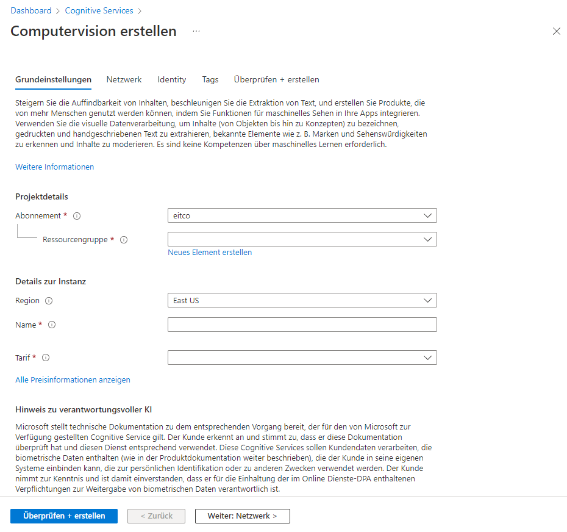
After creating a computer vision service, you need the endpoint. The endpoint can you find in the overview of the service.
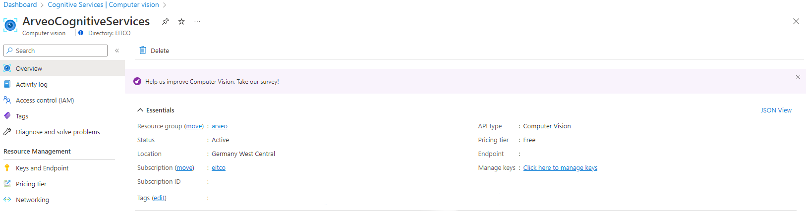
Now you need an access key of your computer vision service.
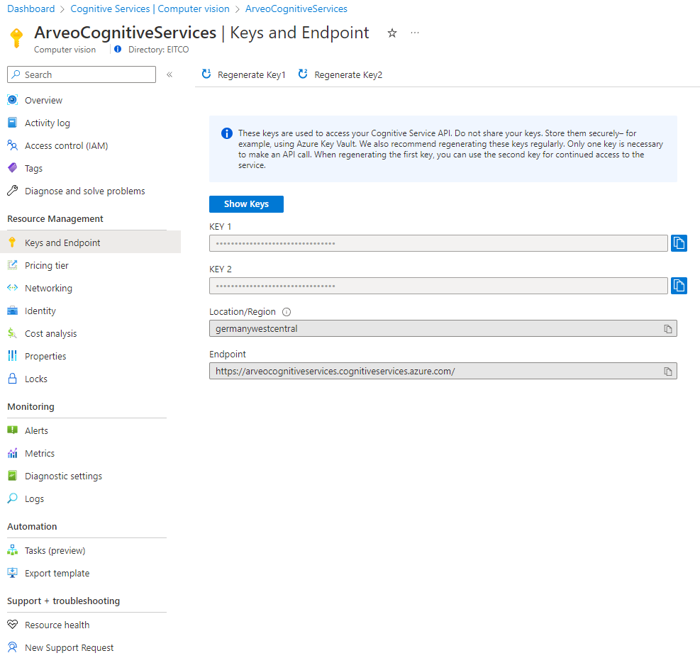
YAML configuration
In the yaml of the document conversion service you must set the following to use the azure fulltext plugin:
azure:
cognitive:
key: ""
endpoint: ""
ocrDetectionLanguage: "de"
modelVersion: "latest"| The default value for the "ocrDetectionLanguage" value is de (german). The other language you can choose is english. If you want to use english, you can write in your yaml "en". |
Azure computer version models can you find here. === Amazon AWS plugins
The document-conversion-plugins-amazon-aws library provides several
plugins based on amazon aws. To use the plugins, the jar file of the library must be added to the classpath
of the service. The plugins will be registered automatically.
| If you want to use this plugin you need an Amazon AWS account (also named IAM account). |
A ZIP containing the library and additional dependencies can be downloaded from nexus using the following maven coordinates:
<dependency>
<groupId>de.eitco.commons</groupId>
<artifactId>document-conversion-plugins-amazon-aws</artifactId>
<type>zip</type>
<classifier>zip</classifier>
<version>12.0.1-SNAPSHOT</version>
</dependency>Unresolved directive in plugins/amazon-aws.adoc - include::../../../../../plugins/amazon-aws/target/generated-sources/main/adoc/plugins.adoc[]
| The AwsTextractPdfToSearchablePdfPlugin has a dependency on the PdfToImagesRenderPlugin (de.eitco.commons.conversion.plugins.oss) |
3.2.2. Setup IAM account and credentials
| If you don’t want to use a technical user for this plugin you can continue with add permission. |
- 1 Create User
-
Login into AWS Console and search for AWS IAM. Here you can create a new user with the Add users button.
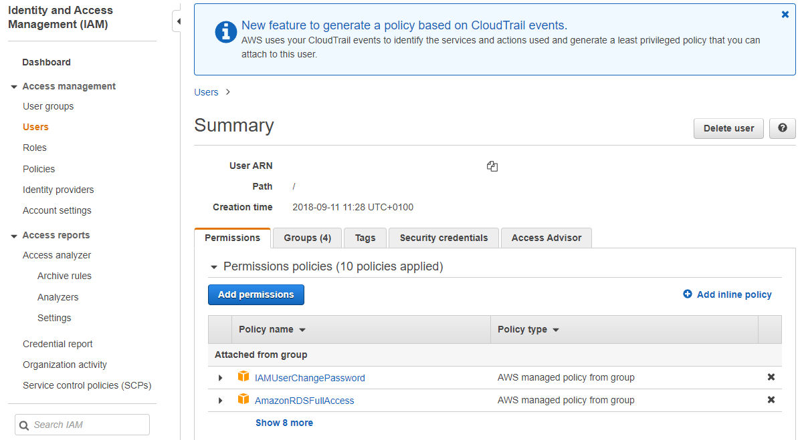
- 2 Add Permission
-
After you create a new user you must add permissions. To do that, go to the newly created user account.
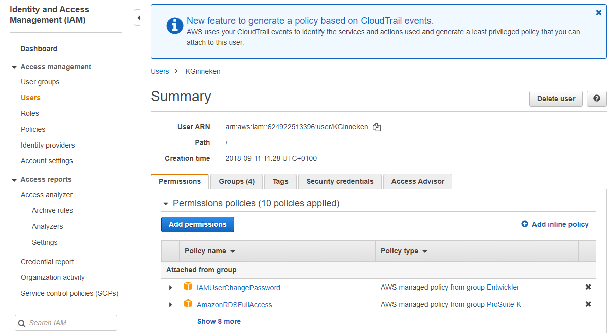
Click on Add permission, then on Attach existing policies and add the AmazonTextractFullAccess permission to the user.
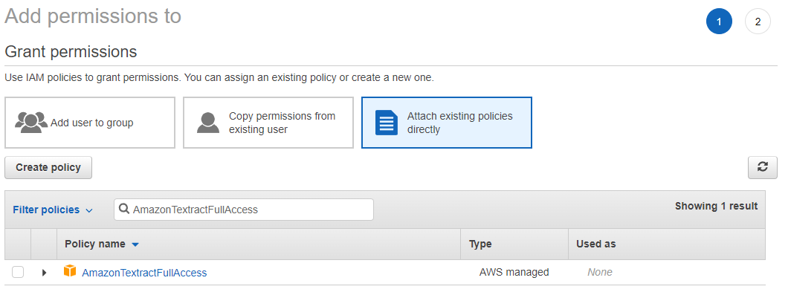
- 3 Create Access Key
-
Now you need to create an access key. Switch to the tab Security credentials.
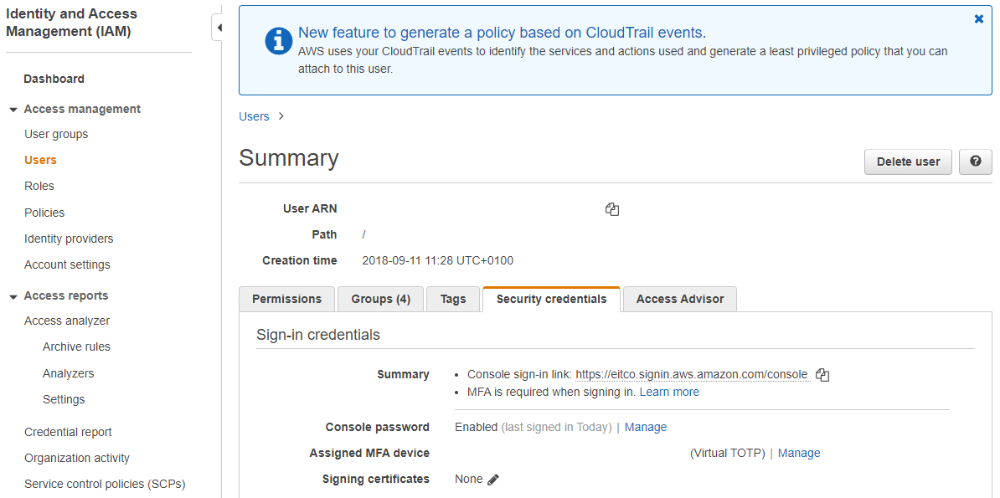
Here you can find acces keys. Create a new access key.
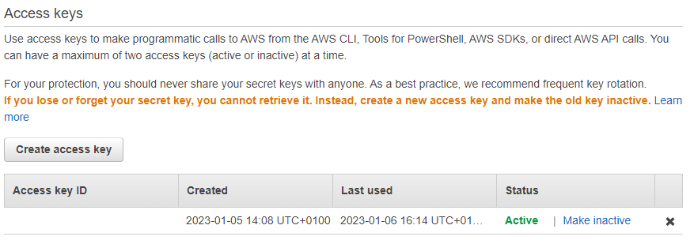
YAML configuration
In the yaml of the Document Conversion Service you must set the following to use the aws textract render plugin:
Here you can find the aws region list.
aws:
accessKey: "XXXXXXXXXXXXXXXXXXXX"
secretKey: "X1XX2XXXXXXXXXXX3XXXXXXXX4XXXXXXX567XXX8"
region: "EU_WEST_1"3.3. e-iceblue plugins
| If you want to use the e-iceblue Plugins, you must have an iText license. |
The document-conversion-plugins-e-iceblue library provides several
plugins based on e-iceblue libraries. To use the plugins, the jar file of the library must be added to the classpath
of the service. The plugins will be registered automatically.
A ZIP containing the library and additional dependencies can be downloaded from Nexus using the following maven coordinates:
<dependency>
<groupId>de.eitco.commons</groupId>
<artifactId>document-conversion-plugins-e-iceblue</artifactId>
<type>zip</type>
<classifier>zip</classifier>
<version>12.0.1-SNAPSHOT</version>
</dependency>Unresolved directive in plugins/e-iceblue.adoc - include::../../../../../plugins/e-iceblue/target/generated-sources/main/adoc/plugins.adoc[]
3.3.1. YAML configuration
In the yaml of the document conversion service you must set the following to use the aws textract render plugin:
Here you can find the aws region list.
e-iceblue:
pdfType: "PdfA1A"
license: ""3.4. iText Plugins
| If you want to use the iText Plugins, you must have an iText license. |
The document-conversion-plugins-itext library provides several
plugins based on iText libraries. To use the plugins, the jar file of the library must be added to the classpath
of the service. The plugins will be registered automatically.
A ZIP containing the library and additional dependencies can be downloaded from Nexus using the following maven coordinates:
<dependency>
<groupId>de.eitco.commons</groupId>
<artifactId>document-conversion-plugins-itext</artifactId>
<type>zip</type>
<classifier>zip</classifier>
<version>12.0.1-SNAPSHOT</version>
</dependency>Unresolved directive in plugins/iText.adoc - include::../../../../../plugins/itext/target/generated-sources/main/adoc/plugins.adoc[]
| The ITextPdfToSearchablePdfaPlugin has a dependency to the PdfToImagesRenderPlugin (de.eitco.commons.conversion.plugins.oss) |
3.4.1. Installing Tesseract
If you want to use the ITextPdfToSearchablePdfaPlugin you need to install tesseract on you operating system.
-
Download and install tesseract from this page https://github.com/tesseract-ocr/tessdoc/blob/main/Downloads.md.
-
For Ubuntu for example: sudo apt install tesseract-ocr
-
-
Add tesseract to the path enviroment variables. For example in Windows you must add the following lines in the path:
-
{path to tesseract}\Tesseract-OCR\tessdata
-
3.4.2. YAML configuration
In the yaml of the document conversion service you must set the following:
itext:
pathToTessData: "{path to tesseract}/Tesseract-OCR/tessdata"
pdfLang: "deu"
iTextLicensePath: "{path to itext license}/itextkey.json"For the pdfLang option you can look at the following page tesseract model list
3.5. XRechnung plugin
The document-conversion-plugins-x-rechnung library provides a plugin that can create PDF and HTML renditions of
XRechnung XML data. It is using the x-rechnung-toolkit-service to create the actual renditions.
A ZIP containing the library and additional dependencies can be downloaded from nexus using the following maven coordinates:
<dependency>
<groupId>de.eitco.commons</groupId>
<artifactId>document-conversion-plugins-x-rechnung</artifactId>
<type>zip</type>
<classifier>zip</classifier>
<version>12.0.1-SNAPSHOT</version>
</dependency>| Source media types | Target media types |
|---|---|
|
|
3.6. Document Converter Plugin
The ToPdfDocumentConverterPlugin provides a way to render various document formats to PDF using the EITCO DocumentConverter service.
This service wraps the SyncFusion library and must be deployed as a separate Docker container.
The plugin does not require any additional dependencies. It can be downloaded from the nexus using the following maven coordinates:
<dependency>
<groupId>de.eitco.commons</groupId>
<artifactId>document-conversion-plugins-documentconverter</artifactId>
<version>12.0.1-SNAPSHOT</version>
</dependency>3.6.1. Configuration
The plugin can be configured using the following properties in your application.yaml:
documentconverter:
base-url: "http://127.0.0.1:8080" # The base URL of the DocumentConverter service
pdf:
conformance-level: "NONE" # The default PDF/A conformance level used when none is requested| Property | Description | Default |
|---|---|---|
|
The base URL where the DocumentConverter service is reachable. |
|
|
The default PDF/A conformance level that is applied when a request does not specify a conformance level explicitly (see PDF and PDF/A output). Must be one of the values listed in PDF/A conformance levels. |
|
3.6.2. PDF and PDF/A output
The plugin supports two target MIME types:
| Target MIME type | Description |
|---|---|
|
Renders the source document to a regular PDF file. |
|
Renders the source document to a PDF/A file for long-term archiving. |
The desired PDF/A conformance level can be selected per request by adding the conformance parameter to the target
MIME type. The value must be one of the levels listed in PDF/A conformance levels, for example:
application/vnd.eitco.pdf-a;conformance=PDFA_2BThe conformance parameter can be applied to both target MIME types. If it is omitted, the resulting conformance level
depends on the target MIME type:
-
For
application/pdfthe plugin uses the default conformance level configured viadocumentconverter.pdf.conformance-level. -
For
application/vnd.eitco.pdf-athe plugin always produces a PDF/A file. If the configured default isNONE, it falls back to the lowest PDF/A levelPDFA_1Bto ensure PDF/A output; otherwise the configured default is used.
PDF/A conformance levels
The following conformance levels are supported by the conformance parameter and the
documentconverter.pdf.conformance-level property:
| Level | Description |
|---|---|
|
No PDF/A conformance. |
|
PDF/A-1a - accessible compliance with the PDF/A-1 standard. |
|
PDF/A-1b - basic compliance with the PDF/A-1 standard. |
|
PDF/A-2a - accessible compliance with the PDF/A-2 standard. |
|
PDF/A-2b - basic compliance with the PDF/A-2 standard. |
|
PDF/A-2u - Unicode compliance with the PDF/A-2 standard. |
|
PDF/A-3a - accessible compliance with the PDF/A-3 standard. |
|
PDF/A-3b - basic compliance with the PDF/A-3 standard. |
|
PDF/A-3u - Unicode compliance with the PDF/A-3 standard. |
|
PDF/A-4 - compliance with the PDF/A-4 standard for archival purposes. |
|
PDF/A-4f - compliance with the PDF/A-4 standard, including support for external references such as object streams or file attachments. |
The level PDFA_4E (engineering documents) is defined but not supported by this plugin and results in an error.
|
Unresolved directive in plugins/documentconverter.adoc - include::../../../../../plugins/documentconverter/target/generated-sources/main/adoc/plugins.adoc[]
4. Usage
The following examples show how to perform different conversions using the client API of the conversion service. The following dependency is required to get access to the http client API:
<dependency>
<groupId>de.eitco.commons</groupId>
<artifactId>document-conversion-http-client-spring-boot-starter</artifactId>
<version>${project.version}</version>
</dependency>The client API instances can be obtained using injectable factory classes.
@Autowired
private FulltextResourceClientFactory fulltextClientFactory;
@Autowired
private DocumentConversionResourceClientFactory conversionClientFactory;
The utility class de.eitco.commons.io.ContentAnalyzer contained in cmn-commons-io can be used to determine the mime
type of a file.
|
4.1. Converting an image to PDF
This example shows how to convert an image of type JPEG to PDF.
DocumentConversionResourceClient client = conversionClientFactory.newClient(); (1)
File jpeg = new File("src/test/data/source/source_inputstreamlist_images/jpgSample.jpg");
try (FileInputStream inputStream = new FileInputStream(jpeg)) {
InputStream rendition = client.render(MediaType.IMAGE_JPEG_VALUE, MediaType.APPLICATION_PDF_VALUE, inputStream); (2)
try (FileOutputStream out = new FileOutputStream("target/rendition.pdf")) {
IOUtils.copy(rendition, out); (3)
}
}| 1 | Creates a new client instance using the DocumentConversionResourceClientFactory |
| 2 | Sends a request for the rendition to the service. The source- and target-mimetypes are strings and can be obtained from any utility class containing standard mime type strings. |
| 3 | Saves the rendition to a file using Apache Commons IO IOUtils |
4.2. Extracting text from a PDF file
This example shows how the API can be used to extract text content from a PDF file.
FulltextResourceClient client = fulltextClientFactory.newClient(); (1)
File pdf = new File("src/test/fulltext-data/source/test.pdf");
try (FileInputStream inputStream = new FileInputStream(pdf)) {
String text = client.extractText(MediaType.APPLICATION_PDF_VALUE, inputStream); (2)
}| 1 | Creates a new client instance using the FulltextResourceClientFactory |
| 2 | Sends a request for the extraction to the service. The source-mimetype is a string and can be obtained from any utility class containing standard mime type strings. |
4.3. Combining multiple images to one PDF
This exmaple shows how to combine multiple images to a single PDF file.
DocumentConversionResourceClient client = conversionClientFactory.newClient(); (1)
File image1 = new File("src/test/data/source/source_inputstreamlist_images/jpgSample.jpg");
File image2 = new File("src/test/data/source/source_inputstreamlist_images/pngSample2.png");
List<ConversionMultipartBodyElement> inputStreamAndMediaTypeList = new ArrayList<>();
FileInputStream fileInputStream1 = null;
FileInputStream fileInputStream2 = null;
try {
fileInputStream1 = new FileInputStream(image1);
fileInputStream2 = new FileInputStream(image2);
inputStreamAndMediaTypeList.add(new ConversionMultipartBodyElement(MediaType.IMAGE_JPEG_VALUE, fileInputStream1)); (2)
inputStreamAndMediaTypeList.add(new ConversionMultipartBodyElement(MediaType.IMAGE_PNG_VALUE, fileInputStream2));
InputStream combinedPdf = client.combineToPdf(inputStreamAndMediaTypeList); (3)
} finally {
fileInputStream1.close();
fileInputStream2.close();
}| 1 | Creates a new client instance using the DocumentConversionResourceClientFactory |
| 2 | Create the body elements for the multipart request that will be sent to the service |
| 3 | Sends the request to the service |
5. Monitoring
5.1. Metrics
The Document Conversion Service provides metrics that can be used to monitor the performance. The following metrics are available:
-
dcs.render.time: Records the time it took to perform one rendering request as well as a counter for the number of performed requests. -
dcs.render.errors: A counter for errors that occurred while rendering. -
dcs.extract.time: Records the time it took to perform one fulltext extraction request as well as a counter for the number of performed requests. -
dcs.extract.errors: A counter for errors that occurred while performing fulltext extractions.
Each of these metrics contains tags for the source and (if applicable) the target mime type in standard string representation (for example: image/jpeg) and for the size of the original content. The size metric uses size ranges: 0-1MB, 1-10MB, 10-100MB, 100-1000MB and >1000MB.
The recording of those metrics can be disabled by setting the parameters management.metrics.enable.dcs.render or
management.metrics.enable.dcs.extract to false.
5.2. Open Telemetry
The Document Conversion Service supports the usage of Open Telemetry. Spans are created for the methods of each render plugin. The outermost span will contain the ID and the tenant (if available) of the user who performed the request.
6. Release Notes
6.1. Release notes 12.0.1-SNAPSHOT (October 07, 2026)
Details
New Features
Changes
Bug Fixes
Interface breaking changes
Configuration changes
Manual migration steps
6.2. Release notes 12.0.0 (October 01, 2026)
Details
New Features
Changes
Bug Fixes
Interface breaking changes
Configuration changes
Manual migration steps
-
ECR-1878: The project structure was aligned with the EITCO service archetype 11.0.5. Several Maven artifacts, Java packages, the NuGet package and the C# namespaces were renamed. Consumers have to update their dependencies and imports as described below.
Maven artifacts (groupId
de.eitco.commonsis unchanged)Old artifactId New artifactId Remark document-conversion-http-client-spring-boot-starterdocument-conversion-sdk-http-springSpring Boot auto configuration for remote access via HTTP.
document-conversion-http-client-springdocument-conversion-sdk-http-springMerged into the new sdk artifact.
document-conversion-http-client-apachedocument-conversion-sdk-http-apacheSpring independent remote access (service loader).
document-conversion-embedded-spring-boot-starterdocument-conversion-sdk-embeddedSpring Boot auto configuration for embedded usage.
document-conversion-http-clientdocument-conversion-client-httpdocument-conversion-commondocument-conversion-apidocument-conversion-core,document-conversion-httpdocument-conversion-implementationBoth modules were merged.
document-conversion-service-standalone,document-conversion-service-configurationdocument-conversion-serviceThe executable service. Note that
document-conversion-serviceused to be a pom-only parent module.document-conversion-service-openapidocument-conversion-openapi-
document-conversion-sdkNew, pulled in transitively by all
document-conversion-sdk-*artifacts.The artifacts
document-conversion-client-interface,document-conversion-client-embedded,document-conversion-serialization,document-conversion-client-csharp, alldocument-conversion-plugins-artifacts and the container image artifacts (document-conversion--images) keep their names.Java packages
Old New de.eitco.commons.conversion.service.commonde.eitco.commons.conversion.service.apide.eitco.commons.conversion.service.common.exceptionsde.eitco.commons.conversion.service.api.exceptionsde.eitco.commons.common.DocumentConversionConstantsde.eitco.commons.conversion.service.api.DocumentConversionConstantsde.eitco.commons.conversion.service.DocumentConversionResources,de.eitco.commons.conversion.http.client.DocumentConversionResourcesde.eitco.commons.conversion.service.api.DocumentConversionResourcesde.eitco.commons.conversion.service.http.*ResourceClient,de.eitco.commons.conversion.service.http.*ResourceClientFactoryde.eitco.commons.conversion.service.api.*ResourceClient,de.eitco.commons.conversion.service.api.*ResourceClientFactoryde.eitco.commons.conversion.service.core,de.eitco.commons.conversion.service.httpde.eitco.commons.conversion.service.implementationde.eitco.commons.conversion.service.client.starter.DocumentConversionEmbeddedClientAutoConfigurationde.eitco.commons.conversion.service.embedded.DocumentConversionEmbeddedClientAutoConfigurationde.eitco.commons.conversion.service.client.starter.http.DocumentConversionClientAutoConfigurationde.eitco.commons.conversion.service.http.spring.DocumentConversionClientAutoConfigurationOnly relevant when using or extending the server side classes directly:
DocumentConversionResource,FulltextResource,UseCasesResourceandInfoResourceare now interfaces inde.eitco.commons.conversion.service.api. Their implementations were renamed to*ResourceImplementationand moved tode.eitco.commons.conversion.service.implementation.DocumentConversionCoreComponentConfigurationandDocumentConversionHttpComponentConfigurationwere replaced byde.eitco.commons.conversion.service.implementation.DocumentConversionServerComponentConfiguration.If you override exception messages in an
exceptionTemplates.properties, change the key prefix fromde.eitco.commons.conversion.service.common.exceptions.tode.eitco.commons.conversion.service.api.exceptions..Container images
The image names (
conversion-base,conversion-oss,conversion-ms-azure,conversion-ms-graph,conversion-x-rechnung,conversion-document-converter), the registry pathdocker-nexus.eitco.de/eitco/conversion/, the tags, the base image and the extension directory/app/extensionsare unchanged. The following changes affect the image content:-
The main class moved from
de.eitco.commons.conversion.service.standalone.DocumentConversionServiceStandaloneApplicationtode.eitco.commons.conversion.service.service.DocumentConversionServiceStandaloneApplication. This is only relevant if you override the entrypoint or command with an explicit main class. -
The bundled
application.yamlnow disables the logbook filters (logbook.filter.enabledandlogbook.secure-filter.enabledarefalse) and sets the log level oforg.springframeworkandorg.springframework.securitytoINFO. Override these properties if you relied on the previous defaults. -
The service now offers the endpoint
GET /swagger. -
Custom extensions mounted into
/app/extensionshave to be rebuilt against the renamed artifacts and packages listed above.
Service ZIP distribution
The files in the ZIP distribution are named after the new artifactId:
document-conversion-service-standalone.jar,.exeand.xmlare nowdocument-conversion-service.jar,.exeand.xml, and the base directory is renamed accordingly. The WinSW service descriptor now startsdocument-conversion-service.jarinstead of the non-existentdocument-conversion-service.war. The Windows service iddocument-conversion-serviceis unchanged. Update scripts that reference the old file names.C# client
-
The NuGet package
Eitco.Document.Conversion.Service.Sdkwas renamed toEitco.Commons.DocumentConversion. -
The namespaces
de.eitco.commons.conversion.service.httpandde.eitco.commons.conversion.service.commonwere merged intode.eitco.commons.conversion.service.api. The entry pointDocumentConversionSdkkeeps its name.
TypeScript client
-
New: an Angular http client including the data model is available as npm package
@eitco/document-conversion-service(Maven artifactdocument-conversion-client-typescript, typetgz). No migration is necessary.
-
6.3. Release notes 11.1.2 (July 29, 2026)
Details
New Features
Changes
Bug Fixes
Interface breaking changes
Configuration changes
Manual migration steps
6.4. Release notes 11.1.1 (July 17, 2026)
Details
New Features
Changes
Bug Fixes
-
ECR-1845: Additional fix for plugin registry. Mime type parameters are now ignored when selecting a plugin.
Interface breaking changes
Configuration changes
Manual migration steps
6.5. Release notes 11.1.0 (July 17, 2026)
Details
New Features
-
ECR-1845: Added support for conversion to PDF/A with a custom mime type attribute and an alternative mime type for PDF/A (application/vnd.eitco.pdf-a). Currently, this is only supported by the documentconverter plugin.
Changes
Bug Fixes
-
ECR-1845: Fixed handling of multipart responses from /multiple endpoint of documentconverter service.
Interface breaking changes
Configuration changes
Manual migration steps